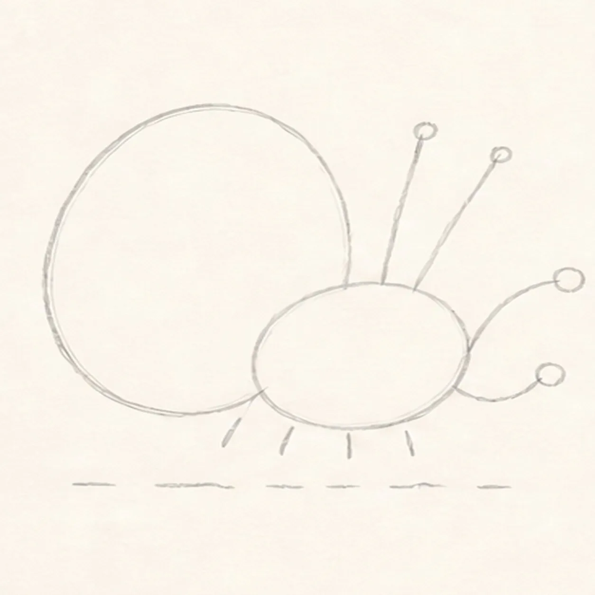
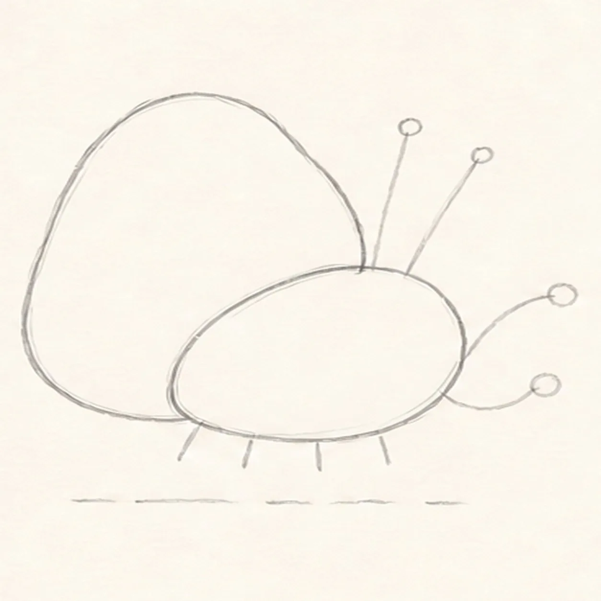
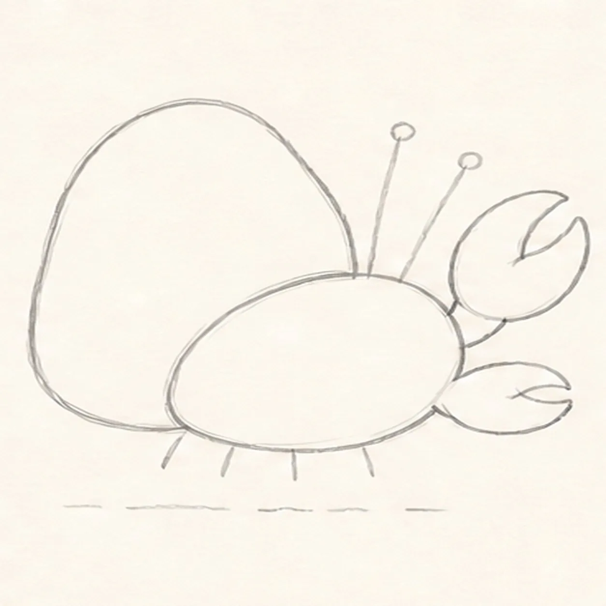
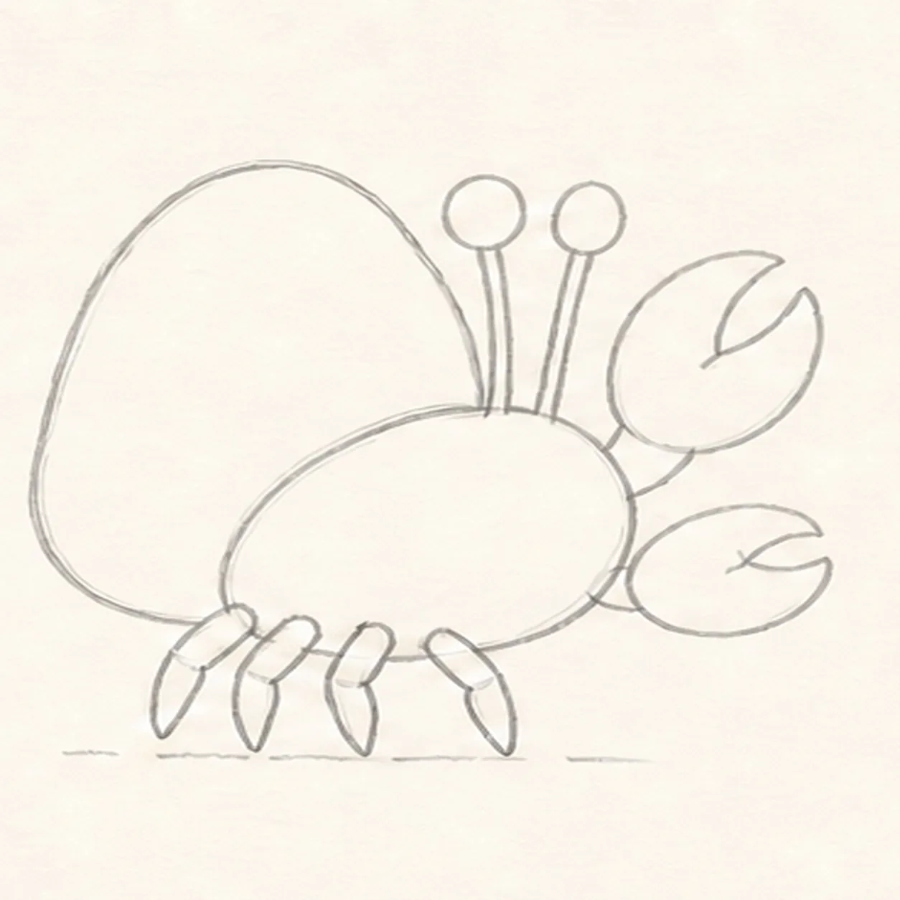
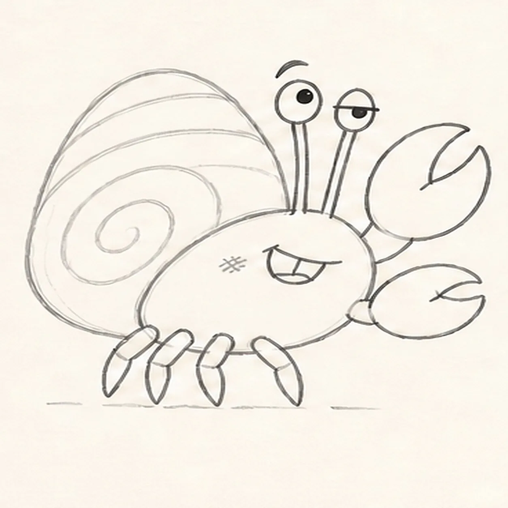
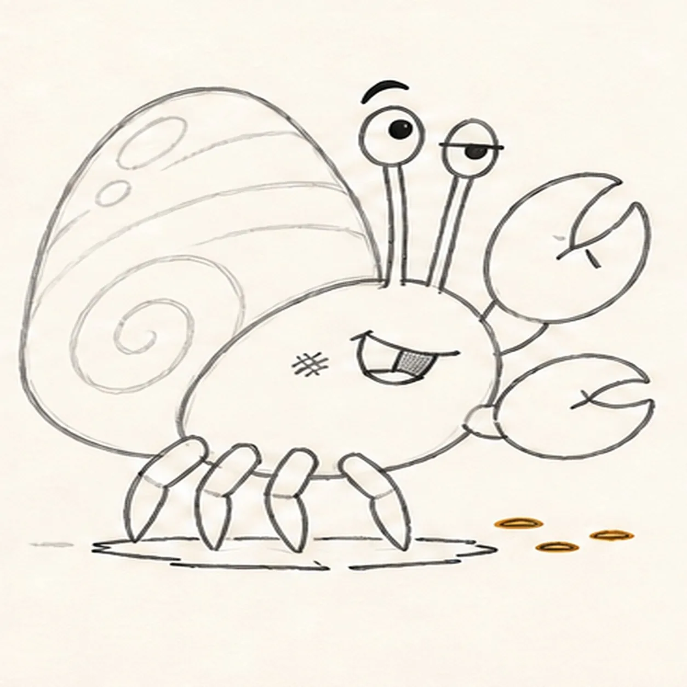
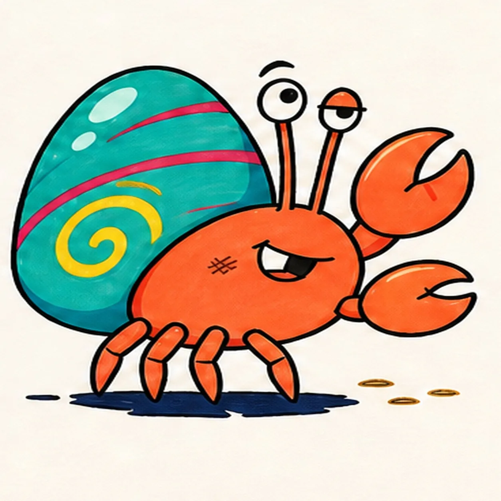

Felt-tip marker mode
Let's draw a cartoon hermit crab with a spiral shell
Treat this as one playful practice round: sketch the idea loosely, simplify the shapes, then commit with confident marker outlines and bright fills.
-
01

Map the shell and routes
Use pale pencil to place one tilted shell oval and center point, one small right-facing body oval, two eye-stalk routes, two claw routes, exactly four leg attachment ticks, and one broken shadow route.
Marker tip: Keep this first frame loose and under two minutes. Check that every route starts from the body area it will eventually attach to.
-
02

Connect shell and body
Connect the large tilted shell and compact right-facing body over their established guides, keeping the shell opening behind the body.
Marker tip: Pull the shell in two broad arcs and stop its lower-right edge where the body overlaps it. Do not close the claws, legs, or eyes yet.
-
03

Shape both claws
Wrap the two established routes with one large raised front claw and one smaller forward claw while preserving both attachment points on the front body.
Marker tip: Make the upper claw noticeably larger so the pose feels lively. Keep both pincers open enough to read at thumbnail size.
-
04

Add stalks and four legs
Turn the two upper routes into exactly two blank eye stalks and the four lower ticks into exactly four bent walking legs.
Marker tip: Count the four legs before moving on. Leave both eyes blank so the expression arrives in the next step.
-
05

Spiral the shell and face
Add one broad shell spiral, exactly three curved shell bands, one wide eye, one half-lidded eye, offset pupils, one raised brow, one crooked one-tooth grin, and two cheek hatches.
Marker tip: Let the spiral widen as it travels outward. The uneven eyes and off-center grin create the crab's attitude, so avoid making the face symmetrical.
-
06

Place beachy details
Add two claw creases, reserve two shell highlights, place exactly three short sand marks, and shape one broken ground shadow beneath the established crab.
Marker tip: Keep the highlights inside the shell and the three sand marks outside the body. These small accents should support the silhouette rather than crowd it.
-
07

Ink and map the tide-pool colors
Ink every established contour and visibly map coral orange, teal, yellow, raspberry, pale aqua, warm sand, and navy marker strokes in every planned region.
Marker tip: Work from the small face and leg shapes toward the broad shell. Pull strokes along each form and leave a few fill gaps for the finishing pass.
-
08

Finish the shell-side swagger
Complete only the established marker fills, strengthen selected keeper contours, and clarify the same highlights, sand marks, face, and broken shadow.
Marker tip: Count two eye stalks, two claws, four walking legs, three shell bands, two highlights, and three sand marks before stopping. Do not add seaweed or extra beach props the earlier frames did not build.

![Handmade felt-tip marker drawing of one face-free upright cartoon hourglass with exactly two rounded teal caps, exactly two attached coral side pillars, one pale-aqua pinched glass vessel, one curved upper golden-yellow sand bed, one centered falling sand stream, one rounded lower sand pile, exactly two open-paper glass highlights, exactly three yellow four-point sparkles, exactly four deep-navy cap notches, thick imperfect black outlines, visible directional marker texture, and one broken deep-navy ground shadow](../assets/cartoon-hourglass-with-flowing-sand-finished-v1.webp)
![Handmade felt-tip marker drawing of one face-free upright teal cartoon walkie-talkie leaning slightly right with one top-left antenna, exactly two coral top knobs, one attached coral push-to-talk button on the upper-left side, one blank pale-aqua rounded screen with a dark bezel, exactly five horizontal deep-navy speaker slots, exactly two yellow radio-wave arcs above the antenna, exactly two open-paper case highlights, exactly four lower grip ribs arranged two per side, thick imperfect black outlines, visible directional marker texture, and one broken deep-navy ground shadow](../assets/cartoon-walkie-talkie-finished-v1.webp)